Market Trends
1. Server DRAM Contract Prices Projected to Rise by 10-15% QoQ in 2Q21 Owing to Limited Production Capacities(TrendForce 2021-02-25)
Since 3Q20, memory suppliers’ production capacities allocated to server DRAM have dropped to about 30% of the total DRAM production capacity……given that second quarters have traditionally marked the cyclical upturn in server shipment, server DRAM demand is thus expected to ramp up in 2Q21, in turn prompting suppliers to raise their quotes for server DRAM. TrendForce is therefore revising up the QoQ increase in server DRAM contract prices for 2Q21 from the original forecast of 8-13% to the adjusted forecast of 10-15%, with certain transactions potentially involving as much as a 20% price hike.
Server DRAM contract prices are likely to increase by more than 40% throughout the year as demand is likely to persist through 3Q21
……
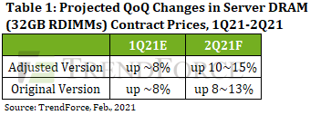
1. 产能受限所致，server DRAM第二季合约价涨幅达10~15%(集邦咨询 2021-02-25)
TrendForce集邦咨询旗下半导体研究处调查，自2020年第三季至今，server DRAM产能比重已降至三成左右，……然第二季为传统server整机出货旺季，预期server DRAM需求将于第二季逐渐走强，进而使原厂在server DRAM的报价上更为积极，预估第二季合约价将从原先8~13%的涨幅调升为10~15%，不排除部分交易涨幅可达两成。
需求将延烧至第三季，server DRAM全年盼涨超过四成
……
整体而言，TrendForce集邦咨询认为第一季平均合约价将较2020年第四季上扬约8%，且预期第一季将出现3~4%的月均涨幅，不排除未来在季度议价的框架下，每月价格仍会有小幅上调的可能性。……故预期2020年底至2021年底该段期间，server DRAM合约价今年累积涨幅可望达四成以上。
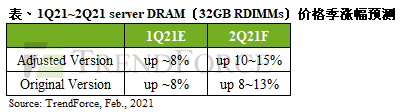
2. Explosive Growth in Automotive DRAM Demand Projected to Surpass 30% CAGR in Next Three Years(TrendForce 2021-02-23)
Driven by such factors as the continued development of autonomous driving technologies and the build-out of 5G infrastructure, the demand for automotive memories will undergo a rapid growth going forward, according to TrendForce’s latest investigations. ……Tesla has adopted GDDR5 DRAM products from the Model S and X onward because it has also adopted Nvidia’s solutions for CPU and GPU. …… The DRAM content has therefore reached at least 8GB for vehicles across all model series under Tesla. The Model 3 is further equipped with 14GB of DRAM, and the next-generation of Tesla vehicles will have 20GB. If content per box is used as a reference for comparison, then Tesla far surpasses manufacturers of PCs and smartphones in DRAM consumption. TrendForce forecasts that the average DRAM content of cars will continue to grow in the next three years, with a CAGR of more than 30% for the period.
Based on the existing vehicle models circulating in the global car market, TrendForce estimates that the average DRAM content of cars will reach around 4GB in 2021. The growth in the average DRAM content of cars is expected to be much higher this year than in the past few years. However, car sales are not as great in scale when compared with sales of consumer electronics such as notebook (laptop) computers and smartphones. In 2019 before the COVID-19 pandemic, the annual global car sales totaled around 94 million vehicle units. Also, cars have less DRAM content compared with servers. Looking at the 2019 data, the distribution of the annual global DRAM consumption shows that the automotive memory segment accounted for less than 2% of the total.
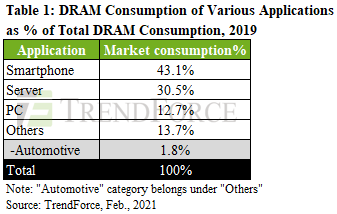
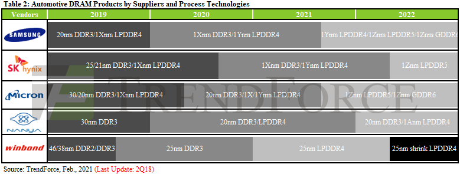
2. 车用存储器需求高速增长， CAGR未来三年可望超过30%(集邦咨询 2021-02-23)
随着自驾等级的提升、5G基础建设的普及等因素影响，车用存储器未来需求将高速增长。以目前自驾程度最高的特斯拉（Tesla）为例，从Tesla Model S/X起，由于同时采用NVIDIA的车用CPU及GPU解决方案，DRAM规格导入当时频宽最高的GDDR5，全车系搭载8GB DRAM；而Model 3更进一步导入14GB，下一代车款更将直上20GB，其平均用量远胜目前的PC及智能手机，预估近三年车载DRAM用量将以CAGR超过三成的涨势继续向上
TrendForce集邦咨询进一步补充，以目前市面上流通的车辆来计算，2021年平均一台车的DRAM使用量仅约4GB，虽然相较过去几年，成长已十分迅速，但相较笔电与智能手机，汽车的总量仍不够大（疫情前2019年计算约9,400万台）；相较server，DRAM在一台车的搭载容量也不够高，因此以DRAM总消耗量来看，2019年仅占整个市场不到2%的水平。
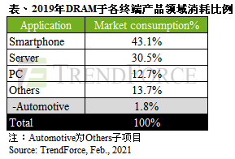
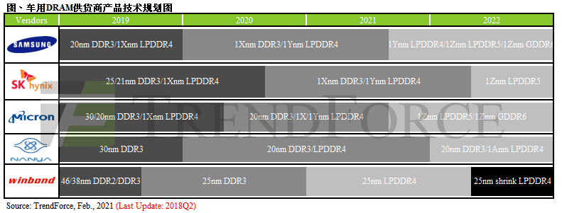
Vendor News
1.Samsung’s EUV application reduced DRAM cell size(Thelec 2020-02-26)
Samsung Electronics’ application of extreme ultraviolet (EUV) lithography technology on its latest DRAM has showed fabrication benefits in scaling, expediting production and improved performance yields, according to reverse engineering analysis firm Techinsights.
Samsung applied EUV technology on 1znm DRAM, which were found in the company’s latest Galaxy S21 5G smartphone series. The company applied the technology on 1znm 12Gb LPDDR5 chips.
Techinsights’ finding showed that Samsung applied EUV process to one layer–the BLP (Bit Line Pad). This means the company only used one EUV mask.
Samsung’s chip is 12Gb, so comparing the pair’s die size is meaningless, but cell size comparison showed Samsung’s was 3.4% smaller than Micron’s at 0.00197µm².
Samsung’s was also shorter in Design Rule (D/R) by 1.2% at 15.7nm compared to Micron’s 15.9nm. (D/R in DRAM refers to the distance between gates).
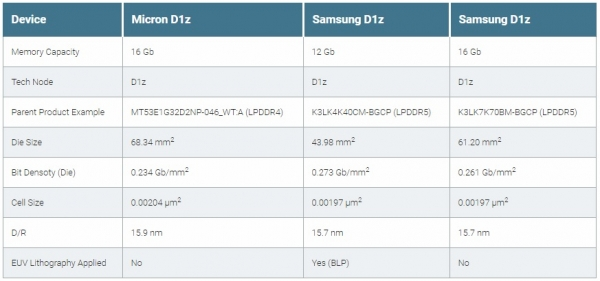
1. 三星基于EUV的1z纳米DRAM量产！背后技术细节揭秘(芯东西 2021-02-19)
半导体分析机构TechInsights拆解了分别采用EUV光刻技术和ArF-i光刻技术的三星1z-nm工艺DRAM，它认为该技术提升了三星的生产效率，并减小了DRAM的核心尺寸。TechInsights还将三星的与美光的1z-nm工艺DRAM进行了对比，三星的DRAM在芯片超单元尺寸（Cell Size）方面同样较小。
一、三款1z-nm DRAM芯片使用EUV技术，核心尺寸缩小18%
三星在2019年末大批量生产了100万颗采用1x-nm工艺和EUV技术的DRAM。紧接着在去年年初，三星电子首次宣布将研发分别使用了ArF-i技术和EUV技术的1z-nm DRAM。如今，三星已经在量产的1z-nm DRAM上应用了EUV技术。
目前三星对采用1z-nm工艺的8GB DDR4、12GB LPDDR5和16GB LPDDR5进行了EUV技术升级。
……
二、美光暂不使用EUV技术，超单元尺寸仅有0.00197µm2
……
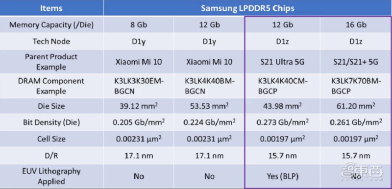
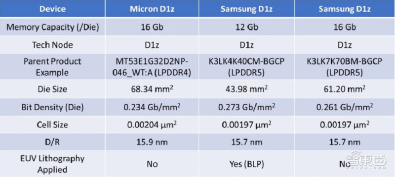
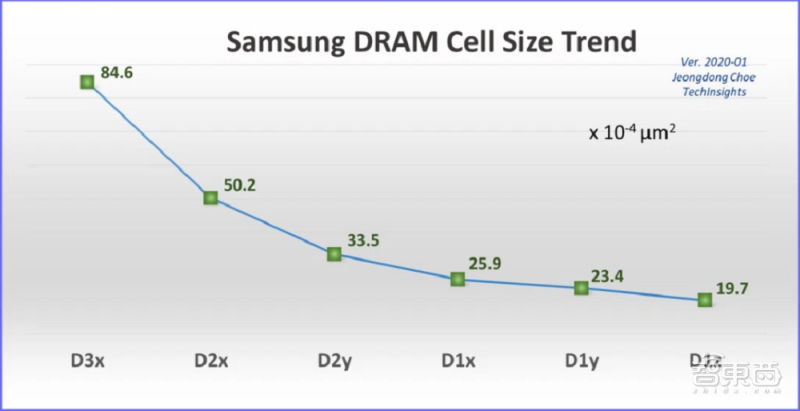
2.Blackouts Affecting Samsung’s Texas-Based Line S2 Fab Expected to Impair 1-2% of Global 12-Inch Wafer Foundry Capacity(TrendForce 2022-02-19)
In compliance with the local policy, Samsung’s Austin-based foundry Line S2 partially suspended operation on Tuesday, Feb 16 due to the winter storm affecting Texas. ………TrendForce’s data show that the monthly 12-inch capacity of Line S2 accounts for nearly 5% of the global total. While the winter storm is estimated to impair about 1-2% of the global 12-inch wafer foundry capacity, the actual duration of the impact will still depend on the region’s temperature. ……
TrendForce indicates that the main process technologies of the fab are the 14nm and 11nm nodes. These technologies are mainly used to manufacture Qualcomm’s 5G RFICs. The fab’s other production capacity is distributed among production lines that feature nodes ranging from 65nm to 28nm and mainly manufacture products under Samsung System LSI.
……
2. 德州三星Line S2厂区断电停工，影响全球12英寸总产能约1~2%(集邦咨询 2021-02-19)
为配合德州政府应对近日暴风雪的配电措施，三星（Samsung）位于德州奥斯汀的晶圆厂Line S2于当地时间周二（2月16日）开始进行部分断电停工，由于当地公用事业奥斯汀能源提早进行断电通知，因此该工厂断电事件并非突发意外。根据TrendForce集邦咨询旗下半导体研究处调查，三星 Line S2月产能占全球12英寸总产能约5%；本次受影响产能将占全球12英寸总产能约1~2%，然实际受影响的时间仍须持续观察气温回升的情况，在预估气温将于周五（2月19日）逐步回暖并阶段性恢复供电的前提下，初步判断完全复工约需至少一周。
TrendForce集邦咨询表示，该厂主要14/11nm产能以生产高通（Qualcomm）5G RFIC为主，其余65~28nm产能则分配给自家System LSI产品；此外，特斯拉（Tesla）及瑞萨（Renesas）等车用半导体亦有在此厂生产。尽管三星已有针对停电提前进行应对措施，目前观察并无晶圆损坏报废，仅部分产品需面临交期延长的情况，但在各项半导体终端需求仍然强劲，加上车用半导体需求吃紧，导致晶圆代工各制程产能多半一片难求的市况下，交期延长更为市场增添紧张氛围。
………
3.SK Hynix signs five-year deal worth $4.3 billion with ASML to secure EUV scanners(Reuters 2021-02-24)
SK Hynix, world’s second-largest memory chip maker, said on Wednesday it had agreed a five-year procurement contract worth 4.8 trillion won ($4.34 billion) with ASML Holding N.V. to secure extreme ultraviolet (EUV) scanners used in manufacturing chips.
The deal is for the chipmaker’s planned mass-production of chips by next-generation processes, SK Hynix said in a regulatory filing.
3.约43亿美元，SK海力士与ASML签署EUV光刻机采购合同(全球半导体观察 2021-02-25)
SK海力士于2月24日宣布，已与ASML签订了一项为期5年、价值4.8万亿韩元(约43.4亿美元)的采购合同。SK海力士将购入价值4.8万亿韩元的EUV光刻机设备。
报道指出，SK海力士在一份监管文件中称，这笔交易是为了实现下一代工艺芯片量产的目标。
SK海力士是全球知名的存储器厂商，2021年2月1日，SK海力士M16新厂举行了竣工仪式。
官方信息显示，SK海力士将首次在M16配备EUV（Extreme Ultraviolet，极紫外）光刻机，通过在M16厂采用先进基础设备，准备把新厂发展成为公司的下一代发展动力。
4.兆易创新与长鑫存储签署框架采购协议 2021年备货水平提高(全球半导体观察 2021-02-08)
2月8日，兆易创新发布公告，公司董事会及监事会审议通过了《关于拟签署框架采购协议及预计2021年度日常关联交易额度的议案》，内容关于兆易创新及子公司与长鑫存储技术有限公司（以下简称“长鑫存储”）及其全资子公司长鑫存储技术（香港）有限公司（以下简称“长鑫存储（香港）”）的采购DRAM产品、开展产品联合开发平台合作的日常关联交易。
兆易创新在公告中指出，根据业务发展需要，公司拟与长鑫存储新增签署《框架采购协议》，并根据市场形势预测，结合对2020年度业务情况的分析，对公司2021年度与长鑫存储及长鑫存储（香港）的关联交易额度进行预计。
据公告披露前次日常关联交易情况，2020年3月，兆易创新董事会及监事会审议通过议案，同意公司的全资子公司芯技佳易微电子（香港）科技有限公司（以下简称“芯技佳易”）与长鑫存储（香港）签署《框架采购协议》等关联交易事项，在公平公允原则下，双方开展日常关联交易；并预计2020年度采购DRAM产品、产品联合开发平台合作额度分别为3.50亿元人民币、2000万元人民币。该议案于2020年4月获股东大会审议通过。
公告显示，2020年度，芯技佳易从长鑫存储（香港）采购DRAM产品的金额为3.73亿元人民币；公司与长鑫存储开展产品联合开发平台合作实际发生额为1966.68万元人民币（该数据尚未经审计）。
New Technology
The industry’s first HBM-PIM(Processing-In-Memory)(Samsung 2021-02-17)
Samsung has developed the industry’s first HBM-PIM (processing-in-memory) to accelerate the applications of AI. Experience double the performance and triple the energy efficiency with no other changes to existing systems.
A PCU (Programmable Computing Unit) is integrated with a memory core on a single chip to enable parallel processing and minimize data movement.
HBM-PIM elevates system performance, especially with memory-bound workloads for even faster speech recognition, translation, and recommendation algorithms.
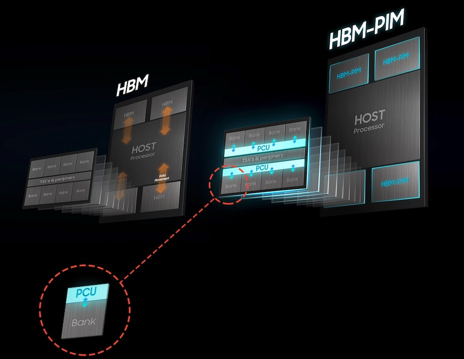
三星首发HBM-PIM内存计算技术，面向人工智能市场(IT之家 2021-02-18)
三星近日宣布了一项新的突破，面向AI人工智能市场首次推出了HBM-PIM技术，据介绍，新架构可提供两倍多的系统性能，并将功耗降低 71%。
在此前，行业内性能最强运用最广泛的是HBM和HBM2内存技术，而这次的HBM-PIM则是在HBM芯片上集成了AI处理器的功能，这也是业界第一个高带宽内存（HBM）集成人工智能（AI）处理能力的芯片。
三星关于HBM-PIM的论文被选为在 2月22日举行的著名的国际固态电路虚拟会议（ISSCC）上发表。三星的HBM-PIM目前正在人工智能加速器内由领先的AI解决方案合作伙伴进行测试，所有验证预计将在今年上半年完成。
据悉，电子计算机多年来都是走诺伊曼架构体系，而这项三星HBM-PIM技术不同。
相比于诺伊曼架构使用单独的处理器和内存单元来执行数百万个复杂的数据处理任务，三星新技术通过将DRAM优化的AI引擎放在每个内存库（存储子单元）内，将处理能力直接带到数据存储的位置，从而实现并行处理并最大限度地减少数据移动。
此外，三星还表示HBM-PIM也不需要任何硬件或软件更改，从而可以更快地集成到现有系统中。